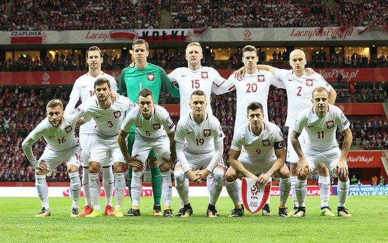

Seleção da Polônia
Seleção da Polônia nas Copas do Mundo
A seleção polonesa participou de sua 8ª edição da Copa do Mundo de futebol em 2018. A melhor
participação dos poloneses foi o terceira lugar em 1974 e em 1982. A primeira participação da
seleção da Polônia na Copa do Mundo foi em 1938. A Polônia chegou a participar de
quatro edições seguidas da Copa do Mundo (entre 1974 a 1986). Na Eurocopa, o campeonato
europeu de seleções, aPolônia foi chegou até as quartas-de-final em 2016, seu melhor resultado
no torneio. A seleção polonesa foi medalhas de ouro nas Olimpíadas de 1972 e prata em 1975 e em 1992.

Retrospecto da seleção da Polônia em Copas do Mundo
1930 - Não disputou
1934 - Não disputou
1938 -
1950 - Não disputou
1954 - Não disputou
1958 - Não se classificou
1962 - Não se classificou
1966 - Não se classificou
1970 - Não se classificou
1974 - 3º lugar
1978 - Eliminada na 2ª fase
1982 - 3º lugar
1986 - Eliminada nas oitavas-de-final
1990 - Não se classificou
1994 - Não se classificou
1998 - Não se classificou
2002 - Eliminada na 1ª fase
2006 - Eliminada na 1ª fase
2010 - Não se classificou
2014 - Não se classificou
2018 - Eliminada na 1ª fase
Técnico da Seleção da Polônia
Czeslaw Michniewicz
Goleiros
Wojciech Szczesny
Bartlomiej Dragowski
Lukasz Skorupski
Kamil Grabara
Zagueiro
Jan Bednarek
Michal Helik
Kamil Glik
Mateusz Wieteska
Marcin Kaminski
Lateral
Arkadiusz Reca
Tymoteusz Puchacz
Matty Cash
Tomasz Kedziora
Bartosz Bereszynski
Volante
Grzegorz Krychowiak
Krystian Bielik
Jacek Goralski
Meias
Jakub Moder
Szymon Zurkowski
Przemyslaw Frankowski
Patryk Kun
Piotr Zielinski
Sebastian Szymanski
Pontas e Centroavantes
Szymon Krolak
Przemyslaw Placheta
Kamil Grosicki
Konrad Michalak
Robert Lewandowski
Krzysztof Piatek
Adam Buksa